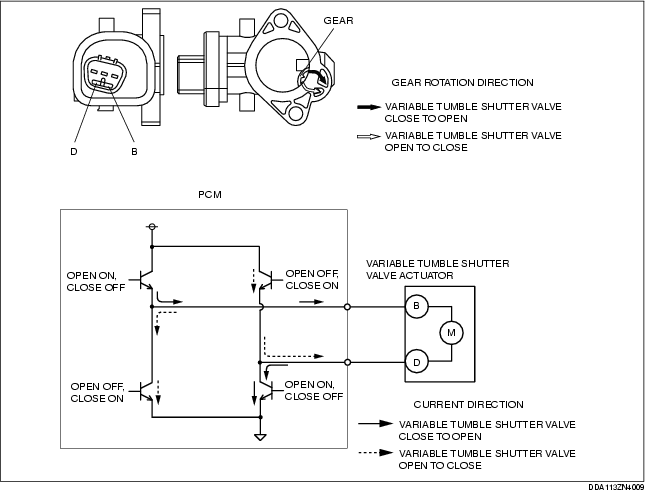

VARIABLE TUMBLE SHUTTER VALVE ACTUATOR CONSTRUCTION/OPERATION [ZY]
id0113001515c8
-
Caution
-
• The property of the variable tumble shutter valve switch built into the variable tumble shutter valve actuator is adjusted to reduce the effect caused from the production tolerance of the intake manifold and variable tumble shutter valve actuator.
-
• If the variable tumble shutter valve actuator is removed from the intake manifold, a significant deviation to the switching performance results. Therefore, the variable tumble shutter valve actuator cannot be removed from the intake manifold.
Construction
• The shutter valve actuator is mainly composed of a DC motor and gear.
Operation
• The variable tumble shutter valve opens and closes by the operation of the motor activated by the PCM. Operation of the motor via activated directional switching switches the variable tumble shutter valve in the direction of open or closed.
• When 12 V is applied to the variable tumble shutter valve actuator terminal D, the gear moves counterclockwise and the variable tumble shutter valve closes. Conversely, when 12 V is applied to the variable tumble shutter valve actuator terminal B, the gear moves clockwise and the variable tumble shutter valve opens.
|
12 V terminal
|
Gear rotation direction
|
Shutter valve operation
|
|
D
|
Counterclockwise
|
Open→ Close
|
|
B
|
Clockwise
|
Close→ Open
|
